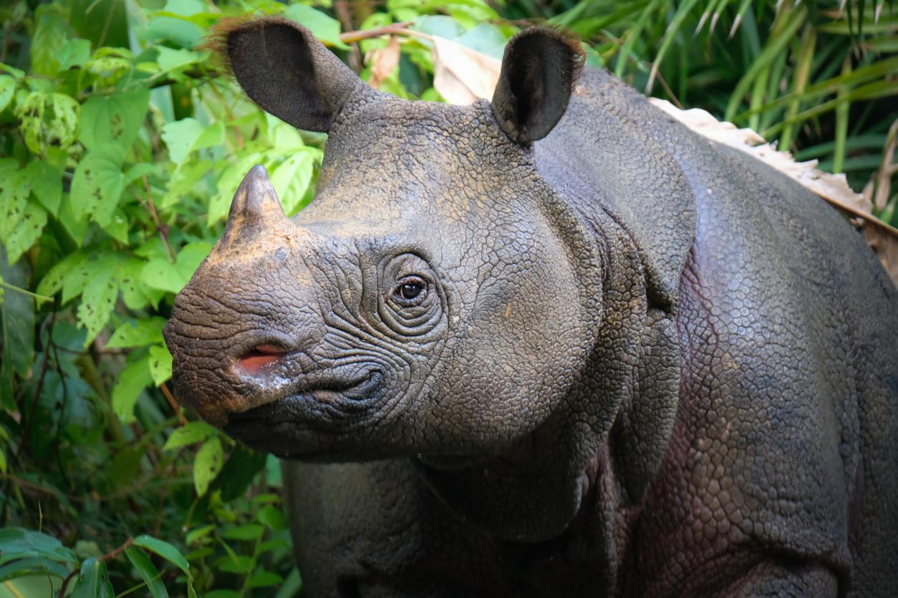

Los Ultimos 20 Yaguaretes

Lamentablemente, hoy en día son muchas las especies en peligro de extinción. Muchas de ellas, debido a la acción del hombre y el cambio climático global, lo que resulta igualmente un efecto indirecto de las actividades del ser humano. Algunas de estas especies en peligro ya están condenadas a desaparecer de aquí a unos años y, aunque hay muchas organizaciones que trabajan por preservarlas, día a día siguen sufriendo.
En esta lista te mostramos los animales en peligro de extinción, te explicamos cómo proteger animales en peligro de extinguirse, los animales y el medio ambiente. Así que, si quieres conocer qué animales están en peligro de extinción, en situación crítica, y qué puedes hacer para ayudarles, ¡sigue leyendo!
El oso blanco u oso polar en peligro de extinción

¿Cuáles son las especies animales en riesgo de extinguirse? Según muchos rankings que indican qué animales están en mayor peligro de extinción, entre las principales especies en peligro de extinción, encontramos al oso polar u oso blanco. Este tipo de mamífero es una de las especies más amenazadas de la Tierra, y algunos no les pronostican más de un siglo de vida. La razón principal del peligro que corren los osos polares (Ursus maritimus) es el deshielo del Ártico o Polo Norte, su hábitat natural. Se calcula que existen solamente algo más de 20.000 ejemplares.
Rinoceronte de Java
Seguimos esta lista de animales en peligro de extinción en el mundo hablando sobre una especie de rinoceronte. Resulta muy dramática la situación en la que se encuentra el rinoceronte de Java (Rhinoceros sondaicus), no solo porque ya quedan muy pocos ejemplares y según la IUCN Red List of Threatened Species se encuentra en estado crítico de peligro de extinción, sino por la razón principal que los empuja a su desaparición: la caza para convertirle en adorno o la creencia, en China y en culturas orientales, de que su cuerno tiene propiedades curativas. La caza, en general, tiene efectos muy negativos para los animales, más aún en determinadas especies.